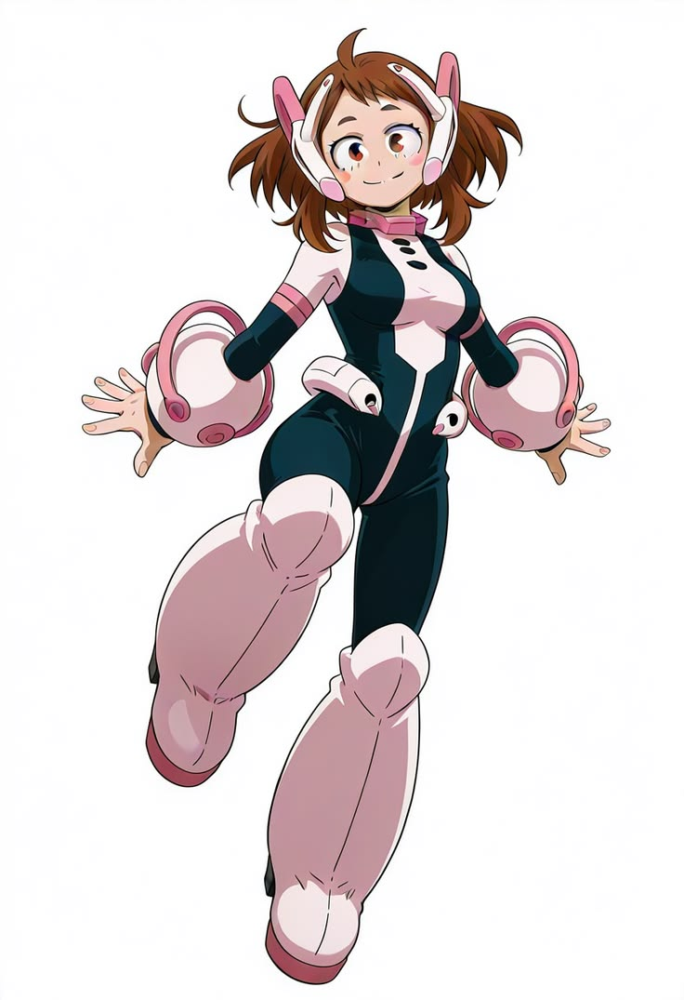

Personajes
Izuku Midoriya (Deku)
Don: One For All. Es el protagonista y estudiante de la clase 1-A.

Nació sin poderes, pero heredó One For All de All Might. Es amable, analítico y muy esforzado. Quiere ser un héroe que salve a todos con una sonrisa.
Katsuki Bakugo
Don: Explosión. Estudiante de la clase 1-A y amigo de la infancia de Deku.

Es orgulloso, explosivo y muy competitivo. Es de los más talentosos de su clase y quiere ser el héroe número uno.
Shoto Todoroki
Don: Mitad frío, mitad calor. Estudiante de la clase 1-A e hijo de Endeavor.

Es serio y reservado. Controla hielo con su lado derecho y fuego con su lado izquierdo. Con el tiempo aprende a usar su poder a su manera.
Ochaco Uraraka
Don: Gravedad. Estudiante de la clase 1-A esta enamorada de Deku.

Es fuerte y persistente. Controla la gravedad puede hacer flotar a personas o objetos.
Shota Aizawa (Eraser Head)
Don: Borrado. Es profesor de la clase 1-A en la academia U.A. y héroe profesional.

Es serio, directo y siempre parece cansado. Usa sus vendas de captura y su Don para anular los poderes de otros. Exige mucho a sus alumnos porque quiere que sobrevivan como héroes.
All Might
Don: One For All. Es el Símbolo de la Paz y maestro de Deku.

Durante años fue el héroe más fuerte del mundo. Siempre sonríe ante el peligro para dar tranquilidad a la gente, y es quien le entrega su poder a Deku.